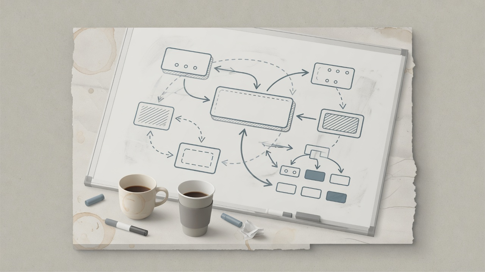

The most expensive design reviews I have run were not missing a box on a diagram. They were missing a decision. One of them froze delivery on an EDP self-serve portal for about a month while two strong engineers disagreed in public about monolith versus microservices — and ownership quietly collapsed. This is how I run a distributed design review when time is short, using that conflict as the worked example. The forty-five minutes are a filter for danger and indecision, not a substitute for deep design.

The situation the review had to unstick
We needed a self-serve portal on top of the Enterprise Data Platform: dataset registration, governance controls, access workflows, metadata — so teams could manage lifecycle without filing tickets into oblivion. Two credible positions formed:
- Stay close to the monolithic EDP backend — simpler integration, less duplication, faster delivery on shared infra.
- Split into microservices early — independent iteration on portal features without waiting on the monolith.
Both sides had technical merit. The failure mode was social: critique moved into open forums in a way that undermined the owner, the owner disengaged, and execution stopped. Stakeholders saw silence. That is a design-process failure, not only an architecture debate.
Minutes 0–5: What user promise are we keeping?
Before hexagons, I want one paragraph:
- Who uses the portal?
- What can they do without a human intermediary?
- What is explicitly out of scope for v1?
For us: GTM/data producers and consumers managing dataset lifecycle — registration, access, metadata — not “rebuild EDP as microservices.” If the promise is fuzzy, stop. Architecture will invent scope.
Minutes 5–15: Where does truth live?
I care about systems of record more than service count. Questions that mattered on the portal:
- Which actions must be consistent with core EDP backend behavior on day one?
- Which workflows change weekly and need independent deploy cadence?
- Where does dataset metadata live so the portal is not a second brain?
We eventually used a hybrid truth model: core platform capabilities stayed integrated with the existing EDP backend; more dynamic workflows (access requests, tagging-style features) could stand as separate services; metadata was centralized with a system fit for dataset lifecycle (in our case, Apache DataHub) so the portal was not inventing yet another catalog. Red flags in any review:
- “Both systems will stay in sync” with no mechanism.
- Every feature forced into one deployability story.
- Metadata treated as a UI detail.
Minutes 15–25: What fails—technically and organizationally?
Classic distributed questions still apply: timeouts, dual writes, partial deploy, replay. On this project the binding failure was different:
- What happens if the owning engineer stops driving?
- What happens if disagreement becomes a public referendum every week?
- What happens if leadership hears only one side’s framing?
A design review that ignores ownership and decision rights will produce a beautiful diagram and a still project. I schedule the technical argument inside a structured forum with criteria — not in drive-by threads. If you need blame-free space, create it deliberately.
Minutes 25–35: How will we choose without infinite debate?
Opinion without evidence burns weeks. The intervention that worked:
- Write evaluation criteria before picking a winner: scalability, maintainability, delivery speed, long-term ownership.
- Force small proofs — both approaches get a time-boxed spike/POC against the criteria.
- Bring a neutral senior engineer into the room to pressure-test both sides without owning either ego.
- Time-box the decision — the review ends with a path, not a sequel meeting.
This is operability of the decision, not only of the service.
Minutes 35–40: People side (do not skip)
Distributed design is done by humans with status and career goals. In parallel with the technical path:
- Rebuild ownership with the engineer who had stepped back — silence is not an acceptable escalation strategy.
- Coach the critic on influence: staff-level impact includes how you challenge, not only that you are right.
- Make expectations explicit in 1:1s so the project is not a proxy war.
Skip this and the hybrid architecture will still die in the next disagreement.
Minutes 40–45: Decision and conditions
We did not pick a pure monolith or a pure microservice rewrite. We picked a hybrid:
- Core platform features (registration, governance controls tightly bound to EDP) stayed where integration cost dominated.
- Dynamic portal features that needed independent iteration moved toward separate services.
- Metadata lifecycle was centralized rather than re-implemented.
Approve with conditions, in writing: what is in v1, what is explicitly later, who owns the seams, when the next review is if assumptions fail. Verbal “sounds good” evaporates. Written conditions survive contact with calendars.
The diagram I want if I only get one
Trade three layered architecture posters for either:
- a sequence of one user action through registration → metadata → access, or
- a side-by-side POC scorecard against the agreed criteria.
Sequence diagrams and scorecards reveal lies that box diagrams hide.
Anti-patterns this freeze taught me
- Public architecture criticism that bypasses the owner.
- Binary holy wars (monolith vs microservices) without workload specifics.
- Design review as spectator sport for leadership without a decision owner.
- EM waiting too long to facilitate because “they’re seniors, they’ll figure it out.”
- Approving to end discomfort rather than risk.
What unblocked looked like
Once criteria, POCs, and a hybrid decision landed, the freeze broke quickly — on the order of a week to resume real execution — and the portal shipped on a timeline measured in months with meaningful adoption. The architecture mattered. The restored ownership mattered more.
Closing
In forty-five minutes you will not finish a distributed design. You can learn whether the team has a clear promise, a coherent truth model, a way to decide, and a human ownership path. On platform work, the last item is not soft. It is how delivery fails first.
Comments
Sign in with GitHub to join the discussion.